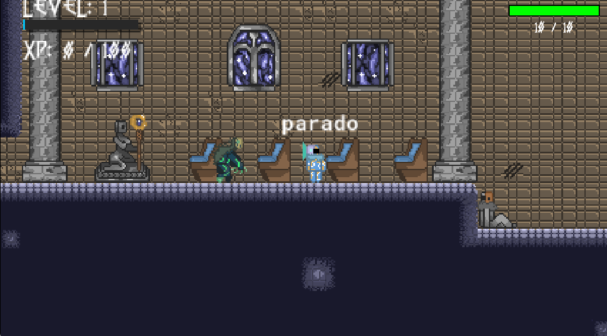

Jogo 2D Interativo (Metroid)
Um projeto de desenvolvimento de jogos focado em engenharia lógica, modelagem de física em tempo real, controle rigoroso de estados e criação de interfaces dinâmicas (HUD) sem travamentos.
// 01. A Dinâmica em Ação (Gameplay & Interações Contextuais)
O GIF abaixo demonstra o comportamento dinâmico do personagem no cenário. Note como o sistema identifica a proximidade de elementos no ambiente e exibe instantaneamente dicas visuais na tela (como o comando "Pressione [I] para interagir"), garantindo feedback imediato para quem joga.

[ Demonstração de movimentação fluida, leitura de proximidade e estados do personagem em tempo real ]
// 02. A Arquitetura Visual (Cenário e Painel de Status / HUD)
A captura de tela abaixo revela a estrutura dos cenários no estilo Metroidvania e a interface de usuário (HUD) posicionada no topo. O painel rastreia de forma síncrona o nível atual do jogador, os pontos de experiência acumulados (XP) e a barra de vida (HP), exigindo sincronização precisa de dados a cada frame renderizado.

[ Ambiente gótico detalhado com tilesets estruturados, colunas e HUD de progressão funcional ]
// 03. O Desafio Lógico e a Solução Aplicada
Desenvolver um jogo do zero vai muito além de colocar imagens na tela; exige raciocínio lógico avançado e domínio de estruturas de dados. Cada movimento do personagem — seja saltar, interagir com um objeto ou sofrer dano — precisa ser calculado milimetricamente para que o jogo não trave e a experiência seja fluida.
Neste projeto, o maior objetivo foi estruturar uma máquina de estados finitos limpa. Isso significa que o software sabe exatamente o que o personagem está a fazer a cada microssegundo (se está parado, em movimento ou ocupado em uma ação), evitando conflitos de comandos e bugs de colisão com o cenário.
Além disso, a construção visual de labirintos e corredores exigiu o uso inteligente de blocos modulares (*tilesets*) para criar um ambiente imersivo, atmosférico e totalmente otimizado em termos de desempenho.
Lógica e Física em Tempo Real
A base do funcionamento do jogo depende de regras matemáticas aplicadas quadro a quadro (por frame):
- Tratamento de Gravidade: Cálculos vetorizados para simular aceleração de queda e impulsos de salto realistas.
- Detecção de Colisões: Checagem rígida para impedir que o personagem atravesse paredes ou pisos do cenário.
- Gestão de Eventos: Sincronização de inputs do teclado com as reações visuais do avatar na tela.
Ferramentas e Organização
Para estruturar todo esse ecossistema técnico, foram empregadas tecnologias focadas em produtividade e controle:
- GameMaker & GML: Motor e linguagem dedicados ao controle síncrono de eventos e renderização gráfica.
- Gerenciamento de HUD: Construção de elementos visuais dinâmicos para exibição de HP, XP e níveis.
- Controle de Versão: Código limpo, modular e versionado publicamente através do GitHub.